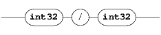
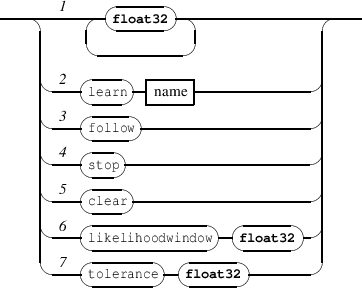

The graphic representation of a signal is approached with graphic signals. As illustrated in figure 14.1, the graphic representation of a signal could be viewed as a stream of a limited set of parameters : the y coordinate at a time t, a thickness h and a color c. A graphic signal is a composite signal including a set of 3 parallel signals that control these parameters. Thus the INScore library provides messages to create signals and to combine them into graphic signals.

A scene includes a static signal node, which OSC address is /ITL/scene/signal which may be viewed as a container for signals. It is also used for composing signals in parallel.
The signal node supports the get message that gives the list of the defined signals and also the get connect message that gives a list of all connections, but doesn’t take any argument.
EXAMPLE
Querying the signal node:
will give the enclosed signals definitions:
And :
will give the signal connections :
Signal messages can be sent to any address with the form /ITL/scene/signal/identifier, where identifier is a unique signal identifier. The set of messages supported by a signal is the following:
EXAMPLE
Creating a signal with a given buffer size:
Creating a signal with a given set of data (the buffer size will be the data size):
Composing signals in parallel produces a signal which value at a time t is a vector of the composed signals values. Thus an additional read-only attribute is defined on parallel signals : the signal dimension which is size of the signals vector. Note that the dimension property holds also for simple signals.
The format of the messages for parallel signals is the following:
EXAMPLE
Putting a signal y and constant signals 0.01 0. 1. 1. 1. in parallel:
Querying the previously defined parallel signal:
NOTE
For a parallel signal:
When signals are in parallel, a projection string may be used to distribute data over each signal. Individual components of a parallel signal may be addressed using a projection string that is defined as follows:

The projection string is made of a index value, followed by an optional parallel marker (˜), followed by an optional step value, all enclosed in brackets.
The index value n is the index of a target signal. When the parallel marker option is not present, the values are directed to the target signal. Indexes start at 0.
EXAMPLE
Sending data to the second component of a parallel signal:
is equivalent to the following message (assuming that the second signal name is ’s2’):
Note that:
The parallel marker (˜) and the step value w options affect the target signals. Let’s consider s[n] as the signal at index n. The values are distributed in sequence and in loop to the signals s[n], s[n+w]...s[m] where m is the greatest value of the index n+(w.i) that is less than the signal dimension. The default step value is 1.
EXAMPLE
Sending data to the second and third components of a set of 3 parallel signals:
is equivalent to the following messages (assuming that the signal dimension is 3):
or to the following (assuming that the target signal names are ’s2’ and ’s3’):
A signal may be connected to one or several graphic attributes of an object. Only the common attributes (see section 2 p.10) support this mechanism. When a connection between a signal and an object attribute is set, sending values to the signal is equivalent to send the values to the connected object attribute. A similar behavior could be achieved by sending the equivalent messages, however the connection mechanism is provided for efficiency reasons and in addition, it supports values scaling.
NOTE
Connections are restricted to one-dimensional signals as source and to one-dimensional attribute as target. This is
not a real limitation since any component of a multi dimensional attribute (e.g. color) is always available as a
single attribute (e.g. red or blue).
NOTE
A connection can’t cross the borders of a component i.e. the target object and the signal node should have the same
parent.
EXAMPLE
Connecting signals to attributes:
Disconnecting some of the previous connections :
A graphic signal is the graphic representation of a set of parallel signals. It is created in the standard scene address space. A simple graphic signal is defined by a parallel signal controling the y deviation value, the thickness and the color at each time position. The color is encoded as HSBA colors (Hue, Saturation, Brightness, Transparency). The mapping of a signal value ([-1,1]) to the HSBA color space is given by the table 14.1.
| parameter | mapping | |
| hue | [-1,1] | corresponds to [-180,180] angular degree where 0 is red. |
| saturation | [-1,1] | corresponds 0% to 100% saturation. |
| brigthness | [-1,1] | corresponds 0% (black) to 100% (white) brithgness. |
| transparency | [-1,1] | corresponds 0% to 100% tranparency. |
A graphic signal responds to common component messages (section 2 p.10). Its specific messages are the following:
EXAMPLE
Creating a signal and its graphic representation:
As mentionned above, a graphic signal expects to be connected to parallel signals having at least an y component, a graphic thickness component and HSBA components. Thus, from graphic signal viewpoint, the expected dimension of a signal should be equal or greater than 6. In case the signalIdentifier dimension is less than 6, the graphic signal will use the default values defined in table 14.2.
| parameter | default value | |
| y | 0 | the center line of the graphic |
| thickness | 0 | |
| hue | 0 | meaningless due to brigthness value |
| saturation | 0 | meaningless due to brigthness value |
| brigthness | -1 | black |
| transparency | 1 | opaque |
When the dimension d of a signal connected to a graphic signal is greater than 6, then the input signal is interpreted like parallel graphic signals. More generally, the dimension n of a graphic signal is:
where d is the dimension of the input signal.
When d is not a mutiple of 6, then the last graphic signal makes use of the default values mentionned above.
EXAMPLE
Creating parallel graphic signals:
NOTE
Using data projection may be convenient when the input signal represents interleaved data. For example, the
projection string [n˜6] distribute data over similar components of a set of graphic signals, where n represents the
index of the graphic signal target component.